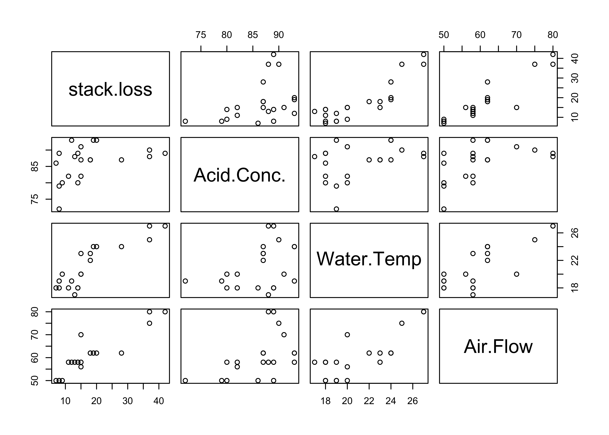

Residuals and Diagnostics
STA 721: Lecture 21
Merlise Clyde
Duke University
Linear Model Assumptions
Linear Model: \[ \mathbf{Y}= \boldsymbol{\mu}+ \boldsymbol{\epsilon}\]
Assumptions:
\[\begin{eqnarray*}
\boldsymbol{\mu}\in C(\mathbf{X}) & \Leftrightarrow & \boldsymbol{\mu}= \mathbf{X}\boldsymbol{\beta}\\
\boldsymbol{\epsilon}& \sim & \textsf{N}(\mathbf{0}_n, \sigma^2 \mathbf{I}_n)
\end{eqnarray*}\]
Focus on
- Wrong mean for a case or cases
- Cases that influence the estimates of the mean
- Wrong distribution for \(\boldsymbol{\epsilon}\)
If \(\mu_i \neq \mathbf{x}_i^T\boldsymbol{\beta}\) then expected value of \(e_i = Y_i -\hat{Y}_i\) is not zero
Standardized residuals
Standardized residuals \(e_i/\sqrt{\sigma^2(1 - h_{ii})}\)
\(h_{ii}\) is the \(i\)th diagonal element of the hat matrix \(\mathbf{H}= \mathbf{X}(\mathbf{X}^T\mathbf{X})^{-1}\mathbf{X}^T\) or leverage
Under correct model standardized residuals have mean 0 and scale 1
plug in the usual unbiased estimate of \(\sigma^2\) \[r_i = e_i/\sqrt{\hat{\sigma}^2(1 - h_{ii})} \]
if \(h_{ii}\) is close to 1, then \(\hat{Y}_i\) is close to \(Y_i\) (why?!?) so \(e_i\) is approximately 0
\(\textsf{var}(e_i)\) is also almost 0 as \(h_{ii} \to 1\), so \(e_i \to 0\) with probability 1
if \(h_{ii} \approx 1\) \(r_i\) may not flag ``outliers’’
even if \(h_{ii}\) is not close to 1, the distribution of \(r_i\) is not a \(t\) (hard to judge if large \(|r_i|\) is unusual)
Outlier Test for Mean Shift
Test \(H_0\): \(\mu_i = \mathbf{x}_i^T \boldsymbol{\beta}\) versus \(H_a\): \(\mu_i = \mathbf{x}_i^T\boldsymbol{\beta}+ \alpha_i\)
- t-test for testing H\(_0\): \(\alpha_i = 0\) has \(n - p -1\) degrees of freedom
- if p-value is small declare the \(i\)th case to be an outlier: \(\textsf{E}[Y_i]\) not given by \(\mathbf{X}\boldsymbol{\beta}\) but \(\mathbf{X}\boldsymbol{\beta}+ \delta_i \alpha_i\)
- Can extend to include multiple \(\delta_i\) and \(\delta_j\) to test that case \(i\) and \(j\) are both outliers
- Extreme case \(\boldsymbol{\mu}= \mathbf{X}\boldsymbol{\beta}+ \mathbf{I}_n \boldsymbol{\alpha}\) all points have their own mean!
- Need to control for multiple testing without prior reason to expect a case to be an outlier (or use a Bayesian approach)
Predicted Residuals
Estimates without Case (i): \[\begin{eqnarray*} \hat{\boldsymbol{\beta}}_{(i)} & = & (\mathbf{X}_{(i)}^T\mathbf{X}_{(i)})^{-1 }\mathbf{X}_{(i)}^T \mathbf{Y}_{(i)} \\ & = & \hat{\boldsymbol{\beta}}- \frac{ (\mathbf{X}^T\mathbf{X})^{-1} \mathbf{x}_i e_i}{ 1 - h_{ii}} \end{eqnarray*}\]
Predicted residual \(e_{(i)} = y_i - \mathbf{x}_i^T \hat{\boldsymbol{\beta}}_{(i)} = \frac{e_i}{1 - h_{ii}}\)
variance \(\textsf{var}(e_{(i)}) = \frac{\sigma^2}{1 - h_{ii}}\)
standardized predicted residual is \[\frac{e_{(i)}}{\sqrt{\textsf{var}(e_{(i)})}} = \frac{e_i/(1 - h_{ii})}{\sigma/\sqrt{1 - h_{ii}}} = \frac{e_i}{\sigma \sqrt{1 - h_{ii}} } \]
these are the same as standardized residual!
How to Calculate \(\hat{\boldsymbol{\beta}}_{(i)}\)
How do we calculate \(\hat{\boldsymbol{\beta}}_{(i)}\) without case \(i\) without refitting the model \(n\) times?
- Note: \(\mathbf{X}^T\mathbf{X}= \mathbf{X}_{(i)}^T\mathbf{X}_{(i)} + \mathbf{x}_i\mathbf{x}_i^T\) rearrange to get \(\mathbf{X}_{(i)}^T\mathbf{X}_{(i)} = \mathbf{X}^T\mathbf{X}- \mathbf{x}_i\mathbf{x}_i^T\)
- Special Case of Binomial Inverse Theorem or Woodbury Theorem: (Thm B.56 in Christensen) \[(\mathbf{A}+ \mathbf{u}\mathbf{v}^T)^{-1} = \mathbf{A}^{-1} - \frac{\mathbf{A}^{-1} \mathbf{u}\mathbf{v}^T \mathbf{A}^{-1}}{1 + \mathbf{v}^T \mathbf{A}^{-1} \mathbf{u}}\] with \(\mathbf{A}= \mathbf{X}^T\mathbf{X}\) and \(\mathbf{u}= -\mathbf{x}_i\) and \(\mathbf{v}= \mathbf{x}_i\)
\[(\mathbf{X}_{(i)}^T\mathbf{X}_{(i)})^{-1} = (\mathbf{X}^T\mathbf{X}- \mathbf{x}_i\mathbf{x}_i^T)^{-1} = (\mathbf{X}^T\mathbf{X})^{-1} + \frac{(\mathbf{X}^T\mathbf{X})^{-1} \mathbf{x}_i \mathbf{x}_i^T (\mathbf{X}^T\mathbf{X})^{-1}}{1 - \mathbf{x}_i^T (\mathbf{X}^T\mathbf{X})^{-1} \mathbf{x}_i}\] - use \(\mathbf{X}_{i}^T\mathbf{Y}_{i} = \mathbf{X}^T\mathbf{Y}- \mathbf{x}_i y_i\) to get \(\hat{\boldsymbol{\beta}}_{(i)}\) and other quantities
External estimate of \(\sigma^2\)
Estimate \({\hat{\sigma}}^2_{(i)}\) using data with case \(i\) deleted
\[\begin{eqnarray*}
\textsf{SSE}_{(i)} & = & \textsf{SSE}- \frac{e_i^2}{1 - h_{ii}} \\
{\hat{\sigma}}^2_{(i)} = \textsf{MSE}_{(i)} & = & \frac{\textsf{SSE}_{(i)}}{n - p - 1} \\
\end{eqnarray*}\]
Externally Standardized residuals
\[t_i = \frac{e_{(i)}}{\sqrt{{\hat{\sigma}}^2_{(i)}/(1 - h_{ii})}} = \frac{y_i - \mathbf{x}_i^T \hat{\boldsymbol{\beta}}_{(i)}} {\sqrt{{\hat{\sigma}}^2_{(i)}/(1 - h_{ii})}} = r_i \left( \frac{ n - p - 1}{n - p - r_i^2}\right)^{1/2}\]May still miss extreme points with high leverage, but will pick up unusual \(y_i\)’s
Externally Studentized Residual
Externally studentized residuals have a \(t\) distribution with \(n - p - 1\) degrees of freedom: \[t_i = \frac{e_{(i)}}{\sqrt{{\hat{\sigma}}^2_{(i)}/(1 - h_{ii})}} = \frac{y_i - \mathbf{x}_i^T \hat{\boldsymbol{\beta}}_{(i)}} {\sqrt{{\hat{\sigma}}^2_{(i)}/(1 - h_{ii})}} \sim \textsf{St}(n - p - 1)\] under the hypothesis that the \(i\)th case is not an “outlier”.
This externally studentized residual statistic is equivalent to the t-statistic for testing that \(\alpha_i\) is zero!
(HW)
Multiple Testing
- without prior reason to suspect an outlier, usually look at the maximum of the \(|t_i|\)’s
- is the \(\max |t_i|\) larger than expected under the null of no outliers?
- Need distribution of the max of Student \(t\) random variables (simulation?)
- a conservative approach is the Bonferroni Correction: For \(n\) tests of size \(\alpha\) the probability of falsely labeling at least one case as an outlier is no greater than \(n \alpha\); e.g. with 21 cases and \(\alpha = 0.05\), the probability is no greater than 1.05!
- adjust \(\alpha^* = \alpha/n\) so that the probability of falsely labeling at least one point an outlier is \(\alpha\)
- with 21 cases and \(\alpha = 0.05\),
\(\alpha/n = .00238\) so use \(\alpha^* = 0.0024\) for each test
Influence - Cook’s Distance
Cook’s Distance measure of how much predictions change with \(i\)th case deleted
\[\begin{eqnarray*} D_i & = &\frac{\| \hat{\mathbf{Y}}_{(i)} - \hat{\mathbf{Y}} \|^2}{ p {\hat{\sigma}}^2} = \frac{ (\hat{\boldsymbol{\beta}}_{(i)} - \hat{\boldsymbol{\beta}})^T \mathbf{X}^T\mathbf{X}(\hat{\boldsymbol{\beta}}_{(i)} - \hat{\boldsymbol{\beta}}) }{ p {\hat{\sigma}}^2} \\ & = & \frac{r_i^2}{p} \frac{h_{ii}}{ 1 - h_{ii}} \end{eqnarray*}\]Flag cases where \(D_i > 1\) or large relative to other cases
Influential Cases are those with extreme leverage or large \(r_i^2\)
Stackloss Data
Case 21
- Leverage \(0.285\) (compare to \(p/n = .19\) )
- p-value \(t_{21}\) is \(0.0042\)
- Bonferroni adjusted p-value is \(0.0024\) (not really an outlier?)
- Cooks’ Distance \(.69\)
- Other points? Masking?
- Refit without Case 21 and compare results
Other analyses have suggested that cases (1, 2, 3, 4, 21) are outliers
- look at
MC3.REGorBASor robust regression
Bayesian Outlier Detection
Chaloner & Brant (1988) “A Bayesian approach to outlier detection and residual analysis”
provides an approach to identify outliers or surprising variables by looking at the probabilty that the error for a case is more than \(k\) standard deviations above or below zero. \[P(|\epsilon_i| > k \sigma \mid \mathbf{Y})\]
Cases with a high probability (absolute fixed value of \(k\) or relative to a multiplicity correction to determine \(k\)) are then investigated.
find posterior distribution of \(\epsilon_i\) given the data and model
Chaloner and Brant use a reference prior for the analysis \(p(\boldsymbol{\beta}, \phi) \propto 1/\phi\)
no closed form solution for the probability but can be approximated by MCMC or a one dimensional integral! see
?BAS::Bayes.outlier
Stackloss Data
Stackloss Data
Adjust prior probability for multiple testing with sample size of 21 and prior probability of no outliers 0.95
To Remove or Not Remove?
- For suspicious cases, check data sources for errors
- Check that points are not outliers/influential because of wrong mean function or distributional assumptions (transformations)
- Investigate need for transformations (use EDA at several stages)
- Influential cases - report results with and without cases (results may change - are differences meaningful?)
- Outlier test - suggests alternative population for the case(s); if keep in analysis, will inflate \({\hat{\sigma}}^2\) and interval estimates
- Document how you handle any case deletions - reproducibility!
- If lots of outliers - consider throwing out the model rather than data
- Alternative Model Averaging with Outlier models
- Robust Regression Methods - M-estimation, L-estimation, S-estimation, MM-estimation, etc. or Bayes with heavy tails